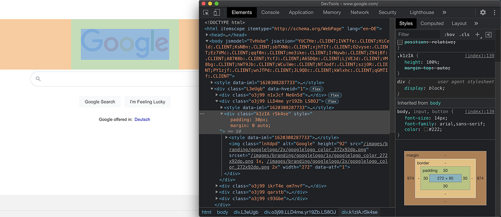

Im Webdesign ist jedes Element auf der Seite ein rechteckiger Kasten, eine Box.
Diese Kästen können mit CSS gestaltet werden, zB. mit Breiten- und Höhenangaben, Rahmen und Abständen.
Die Gesamtgröße der Box ergibt sich aus mehreren Faktoren.
Box-Model
A
p {
box-sizing: content-box;
}
B
p {
box-sizing: border-box;
}
Bei box-sizing: content-box; bezieht sich die width-Angabe nur auf den Inhalt des Elements.
padding und border vergrößern die Box zusätzlich nach aussen!
Element mit width 300px
Gesamtbreite: 300px
width
Plus padding von 50px
auf jeder Seite
Gesamtbreite: 50 + 300 + 50 = 400px
width
Plus border von 6px
auf jeder Seite
Gesamtbreite: 6 + 50 + 300 + 50 + 6 = 412px
width
Das Element ist am Ende 412 Pixel breit, obwohl in CSS width mit 300px definiert wurde!
padding und border vergrößern die Box zusätzlich nach aussen!
width + padding + border
= Gesamtbreite
Box-Model
A
p {
box-sizing: content-box;
}
B
p {
box-sizing: border-box;
}
Ein einfacher verständliches Modell, bei dem width der Gesamtbreite einschließlich padding und border entspricht, ist box-sizing: border-box;
Element mit width 300px
Gesamtbreite: 300px
width
Plus padding von 50px
auf jeder Seite
Gesamtbreite: 300px
width
Plus border von 6px
auf jeder Seite
Gesamtbreite: 300px
width
Die Breiten von padding und border werden auf der Innenseite des Elements abgezogen.
Die Gesamtbreite bleibt unverändert!
Dieses Box-Model gilt in Fachkreisen weithin als überlegen und einfacher verständlich als das Standard-Model.
Manche sind der Ansicht, es hätte sowieso der Standard werden sollen.
Das kann man wenn man möchte aber auch selbst einstellen.
Man kann das Verhalten von box-sizing: border-box; für alle Elemente verbindlich machen, wenn man die Eigenschaft dem * Selektor hinzufügt.
* ist ein Selektor, der alle Elemente umfasst. Das ist manchmal einfacher, als sie einzeln aufzulisten.
* {
box-sizing: border-box;
}
Man sollte * sehr vorsichtig einsetzen. Die meisten Eigenschaften sollten nie für alle Elemente auf einmal gesetzt werden!
Man kann sich über die Entwicklertools ("Developer Tools") ein Bild vom auf einer Seite verwendeten CSS machen.

margin Aussenabstandpadding Innenabstandcontent Inhalt
Sie heißen in jedem Browser etwas anders, lassen sich aber in der Regel über das Kontextmenü erreichen; zB. über Prüfen, Untersuchen, oder Inspect Element
Wenn einen die default-margins, -paddings und sonstige Stile von Elementen stören, kann man sie mit einem CSS-Reset deaktivieren.
* {
margin: 0;
padding: 0;
font-size: 100%;
font-weight: normal;
box-sizing: border-box;
}
Damit lässt sich auf einfache Weise die Gestaltung für alle Elemente auf einmal normalisieren.
Es gibt auch viel umfassendere Reset-Scripts von Profis wie zB. Eric Meyer.
Bis vor einigen Jahren waren Webdesigner in der Gestaltung von Seiten auf die Verwendung einiger weniger Schriftarten beschränkt.
Damit eine gewählte Schrift angezeigt werden kann, muss sie auf dem anzeigenden Gerät auch installiert sein.
Es gibt nur wenige Schriften, die so weit verbreitet sind, dass man sie ohne Risiko auf Websites einsetzen kann.
Das sind die so genannten web safe fonts. Dazu zählen zB. Arial, Verdana, Tahoma, Times New Roman und Georgia.
Weit verbreitete Schriftarten
- Arial
- Verdana
- Tahoma
- Courier New
- Impact
- Trebuchet MS
- Comic Sans MS
- Times New Roman
- Georgia
- Palatino
- Garamond
- Bookman
Bekannte Klassiker wie Helvetica oder Futura zählen nicht dazu!
Wollte man extravagantere Schriften einsetzen, gab es zwei Möglichkeiten:
Möglichkeit 1:
Komplexe Font-Stacks
html {
font-family: 'Helvetica Neue', Helvetica, Arial, sans-serif;
}
Man gibt mehrere Schriftarten an, beginnend mit dem idealen Font, gefolgt von möglichst ähnlichen Alternativen.
Man sollte man mit web-sicheren Schriften und einer generischen Klassifikation abschliessen.
| html { |
| font-family: |
'Helvetica Neue', |
Helvetica, |
Arial, |
sans-serif; |
| } |
| |
| |
| |
| |
|
Ideal |
Alternative |
Common
Arial
Verdana
Tahoma
Impact |
Generic
sans-serif
serif
monospace
fantasy |
Wichtig ist, dass man Schriften wählt, die ähnlich weit laufen, dass die Textlänge nicht zu stark variiert.
Nachteile
- Schwierig, einander ähnliche Schriften zu finden
- Wenig Kontrolle über Anzeige
- Uneinheitliches Erscheinungsbild
Möglichkeit 2: Bilder
<h1><img src="headline.jpg" alt="" /></h1>
Man setzt den gewünschten Text in Photoshop, speichert als transparentes PNG und platziert in HTML als <img> Element.
Nachteile
- Änderungen sind mühsam
- Text kann nicht indiziert werden
- Lange Ladezeiten
- Keine HiDPI/Retina-Optimierung
Webfonts sind die Lösung für die gezeigten Probleme und erlauben die Verwendung praktisch beliebiger Schriftarten!
Dafür platziert man die gewünschte Schriftart im Projektordner und definiert sie in CSS.
@font-face {
font-family: 'Wunschfontname';
src: url('fontdatei.woff') format('woff');
font-weight: normal;
font-style: normal;
}
| Wunschfontname |
Name, unter dem die Schrift
in CSS erreichbar sein soll |
| fontdatei.woff |
URL der Schrift-Datei
in deinem Projektordner |
.woff = Web Open Font Format
WOFF ist ein Schriftformat für Browser und kann aus normalen .ttf und .otf generiert werden, zB:
Achte dabei immer darauf, dass die Lizenz die Verwendung auf deiner Seite auch zulässt! Die meisten Schriften sind kostenpflichtig!
Im Anschluss lassen sich so eingebettete Fonts in CSS über die normale font-family Syntax verwenden.
@font-face {
font-family: 'Wunschfontname';
src: url('fontdatei.woff') format('woff');
font-weight: normal;
font-style: normal;
}
h1 {
font-family: 'Wunschfontname', Arial, sans-serif;
font-size: 2.2em;
}
Die @font-face Syntax kann recht umfangreich und komplex werden, wenn man viele Schriften oder Schnitte einsetzt.
Es gibt mehrere namhafte Font-Hoster, die Schriften zur Verfügung stellen, zB.
Google Fonts oder Adobe Fonts.
Dann muss man in der Regel nur eine externe CSS-Datei einbinden und kann die Schriften verwenden. Das Hosting der Dateien übernimmt der Anbieter.
Jeder Creative Cloud Account hat automatisch und ohne Aufpreis Zugriff auf die Adobe Fonts Library!
Das entspricht einem Gegenwert von ca. $60 im Jahr!
Google Fonts sind komplett kostenlos, aber die Qualität der Schriften variiert stark; es gibt viele Plagiate.
"To embed a font, copy the code
into the <head> of your html"
<link rel="preconnect"
href="https://fonts.gstatic.com">
<link rel="stylesheet"
href="https://fonts.googleapis.com/css2
?family=Open+Sans:ital,wght@0,300;1,300&display=swap">
Wenn die Schrift mehr Gewichte als nur regular und bold hat, kann man diese mit einer Notation ähnlich dem Linotype numbering system verwenden.
| 100 |
Thin (Hairline) |
leichter |
| 200 |
Extra Light (Ultra Light) |
|
| 300 |
Light |
|
| 400 |
Normal |
|
| 500 |
Medium |
|
| 600 |
Semi Bold (Demi Bold) |
|
| 700 |
Bold |
|
| 800 |
Extra Bold (Ultra Bold) |
|
| 900 |
Black (Heavy) |
schwerer |
html {
font-family: 'Open Sans', Arial, sans-serif;
font-weight: 700;
}